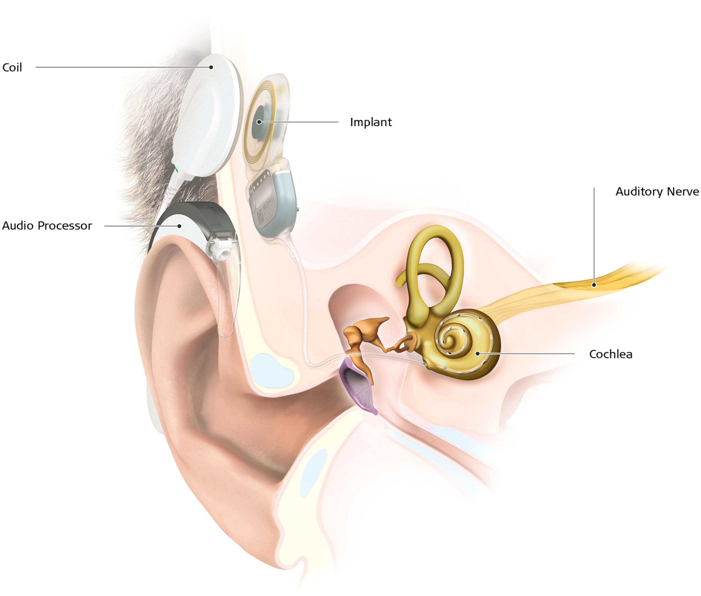
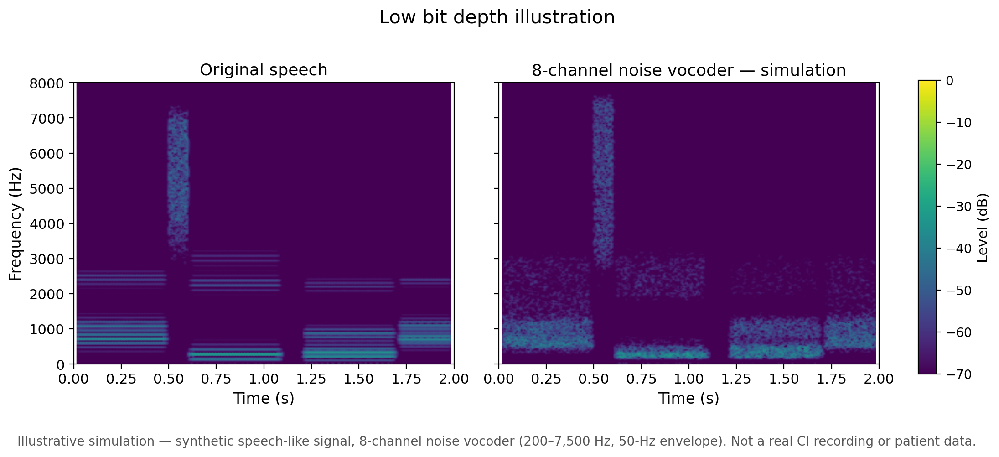
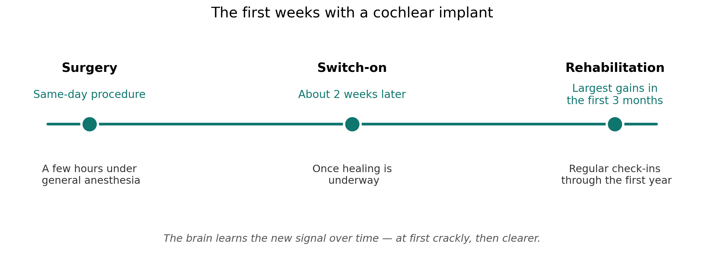

A student once interviewed me by phone, back when I was in my Au.D. program. I had no idea he wore a cochlear implant. None at all. Usually, when someone has had severe hearing loss since childhood, or lived with it for a long time, their consonants come out a little smeared. This student had none of that — he heard and spoke clearly, on the phone, of all places. That alone was impressive.
Later, I ran into him in the school cafeteria. He came over to say hello — he'd gotten into the program. And that's when I saw it: the implant. I was genuinely surprised. Even with a cochlear implant, he hears like this. He'd worn it since he was very young, which makes a difference. But in that moment, what hit me was how dramatically a cochlear implant can change a life.
That moment is also why I keep getting the same question, over and over, from patients and their families. So let me start there.
The expectation
"If I get a cochlear implant, will I hear again?"
I hear some version of this question all the time. Along with: "Will it really work?" "I heard it's surgery — can I even have it?" "Is it safe for my health?" "I'm old — is it still okay?" "Am I really bad enough to need one?"
Underneath all of them is the same picture: surgery fixes the ear, and hearing comes back, like flipping a switch. That picture is understandable. It is also not what a cochlear implant does.
What it actually does
A hearing aid makes sound louder. It takes the sound coming into the ear canal, amplifies it, and sends it through the middle ear the usual way. A cochlear implant does something else entirely. It skips the hair cells — the tiny sensors in the inner ear that turn sound into nerve signals — and sends electrical signals straight to the auditory nerve.

That's why it can work even when hearing aids no longer help. But it also means the hearing it gives you is a different kind of hearing.
Here is the part that surprises people most. A healthy inner ear has roughly 30,000 nerve fibers, each carrying its own fine detail. A cochlear implant groups those signals together — current devices have just 12 to 22 channels, depending on the manufacturer (12 for MED-EL, 16 for Advanced Bionics, 22 for Cochlear Nucleus). The detail drops. And many patients describe what that sounds like in a very specific way: crackly. Like static. Like a radio that isn't quite tuned to the station.
As a sound designer, I have another way to say it: it sounds like low bit depth audio. When you lower the bit depth of a recording, you lose resolution — the sound gets rough, grainy, less precise. The crackly sound that people with low word-recognition scores describe sounds a lot like that.

But that is not everyone's story. Some people switch the implant on and hear well almost right away — words make sense from the first day. The experience varies a lot from person to person, and that variation is real: in the research, too, outcomes spread widely even among people with similar hearing loss (Ma et al., 2023). So if you are considering an implant, it is worth knowing both versions — the sound may start out rough and get clearer with time, or it may click much faster than you expect.
Who it helps most
Clinicians usually start talking about a cochlear implant when hearing aids stop being enough. A common rule of thumb for referral is 60/60: unaided average hearing thresholds of 60 dB HL or worse in the better ear, and an unaided monosyllabic word score of 60% or less in that ear (Zwolan et al., 2020).
How much difference it makes depends on where you start. Someone whose word recognition has dropped to 10–20% will almost certainly feel the difference. Someone still at 60% might not feel much of one. The worse the hearing, the bigger the gap the implant can close. One meta-analysis found average word-recognition scores improved by about 37 percentage points in the first three months after implantation (Ma et al., 2023).
Age matters less than people think. There is a minimum age — currently 7 months for MED-EL devices and 9 months for Cochlear's — because for a child, an implant can mean the difference between a life built on sign language and a life built on hearing. That is a different life, in the most literal sense. But there is no maximum age. I've heard of a 96-year-old having the surgery. As long as there is no medical reason not to, age alone doesn't rule it out.
The surgery itself is usually a same-day procedure, a few hours under general anesthesia. Before that comes an evaluation — and one thing worth knowing is that cochlear implants are usually handled by a dedicated center, not the clinic where you normally go. Criteria may differ slightly from center to center, so it's worth getting evaluated at more than one. Each team runs its own medical evaluation and walks you through the course of treatment, the device options, and insurance coverage.
And for people with severe loss, it's not only about conversation — it's about safety. Hearing a car coming, or a fire alarm going off, can be the difference between reacting in time and not.
What I tell patients is simple: you will hear, and your quality of life will likely rise with it — less frustration in every conversation, less withdrawing from people, more enjoyment of the life around you.
The first weeks
The implant is usually switched on about two weeks after surgery, once healing is underway. That day is famous — there are videos all over YouTube of it. A husband's voice. A child hearing a parent for the first time. People are startled. Some cry. Some just stare, amazed. Some are simply happy.
But there is a quieter side to that day, and it matters. If you used to hear normally and then lost your hearing, you carry a memory of what sound is supposed to be like. The implant might not match that memory — not at first, and maybe not ever in the way you expect. That gap can feel like disappointment, even when the implant is working. It's worth saying that out loud before the switch-on, not after.
What happens next is the part people underestimate: the brain learns. At first, the crackly sound is hard to make sense of. But with rehabilitation — training to recognize which crackly pattern is which word, which sentence — it gets clearer over time. The brain rewires itself around the new signal. Rehabilitation is usually provided by the implant center. The biggest gains come fast — most of the improvement happens in the first three months — and follow-up visits continue through the first year. Think of it like getting used to a new pair of glasses: at first everything feels off, and then one day you forget you're wearing them.

What happens at the center
So if you or someone you love is considering it, here is the good news: you don't need to walk in with a list of questions. The center does the explaining. They run the evaluation, do their own medical workup, walk you through the device options and what insurance covers, and set up the rehabilitation plan. That is their job — and they do it for every patient.
And one more thing, for the people who are on the fence because only one ear is bad: "My other ear hears fine — do I really need this?" It's a fair question. One-sided hearing loss can throw off your balance, and it makes it harder to tell where sounds are coming from. An implant can help with both — and with the simple fact that understanding people gets easier when you can catch more of what they say.
The takeaway
A cochlear implant doesn't give you your hearing back. It gives your brain a new kind of hearing to learn — rougher at first, clearer with time, and for many people, life-changing in the end.
So the question isn't really "Will I hear again?" It's "What will I hear?" And that's a question worth asking properly, before the surgery, with someone who can walk you through the answer.
P.S. I'm planning a small experiment of my own: how far down can you turn the bit depth before a sound at the same level and frequency disappears? I'll write about what I find.